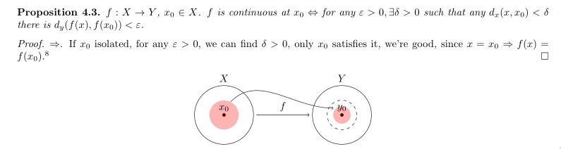
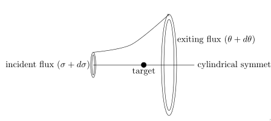
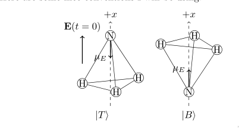

These are some pretty diagrams that I have made in TiKz over the years.
Note that all of these were written in under 10 minutes, since I was
trying to keep up with the lecturer at the time.
I should polish them up, but I am still in school!

An illustration of continuity in a metric space!

An illustration of the experimental setup of Rutherford Scattering

An illustration of a two-level system (Ammonia) I used in a homework assignment